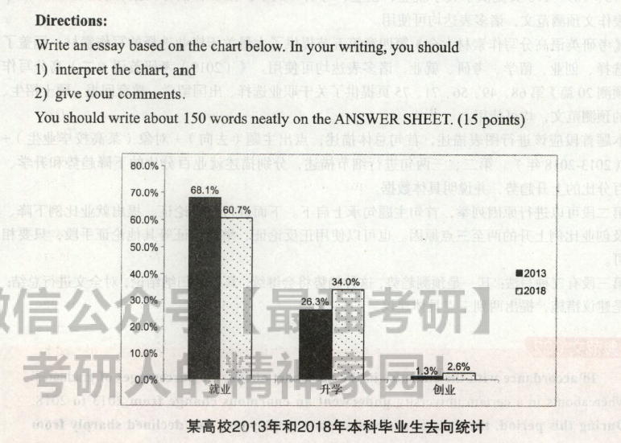

2019
小作文
Dear Professor Smith,
It is my great honor to plan a debate on the theme of city traffic. My suggestion is that the specific topic of the debate is: Private Cars-A Blessing or a Curse?
The primary reasons are as follows. On the one hand, some claim that there are many advantages in possessing a car. It gives a much greater degree of comfort and mobility. On the other hand, others strongly object to developing private cars. They maintain that private cars contribute to traffic congestion so greatly that the advantages gained in comfort and freedom are often cancelled out by the frustration caused by traffic jams.
My arrangement is that the debate will be held in the Students' Recreational Center on December 22,2018.I am looking forward to your reply.
大作文

In accordance with the statistics in the bar chart above, the percentages of graduates' whereabouts in a certain university underwent an enormous change from 2013 to 2018. During this period, the data of students seeking employment has declined sharply from 68.1% to 60.7%, whereas the statistics of those choosing further education and running their own business increased markedly from 26.3% and 1.3% to 34% and 2.6% respectively.
From my perspective, the tendency in the bar chart above can be traced back to three major contributors. First and foremost, with social competition hecoming keener, the situation of the job market is increasingly grim. In addition, in today's world, where college population grows rapidly, further education becomes essential if they wish to compete for a rewarding job. Last but not least, for those with a manageable schedule, exploratory mind and entrepreneurial spirit, starting their own business can offer important career benefits -not to mention a handsome paycheck.
Generally speaking, when it comes time for university graduates to decide their next step in life, there is no right or wrong choice for everyone. Rather, each student must reach his or her own conclusion. By taking career goals, financial status and personal preferences into consideration, students can improve their chances of making an optimal choice.
如上面柱状图所示，某高校毕业生去向的百分比在2013年至2018年间发生了巨大的变化。 在此期间，求职学生的数据从68.1%急剧下降到60.7%，而选择继续深造和创业的学生的数据分别从26.3%和1.3%上升到34%和2.6%。 在我看来，以上柱状图中的趋势是由三个主要原因造成。首先且最重要的是，随着社会竞争变得日益激烈，就业市场的形势越来越严峻。其次，现在大学生的人数快速增长，如果他们想竞争得到一-份满意的工作，继续深造就变得十分必要。最后但同样重要的一点，对于那些能合理安排时间，有探索思维和创业精神的同学而言，创业的经验会使他们在职场中受益匪浅，更别提他们拿到的那份丰厚薪水了。 总之，大学生毕业之际，每个人在决定人生中的下一步时，做何选择无所谓对与错。更恰当地说，每个学生必须做出属于自己的选择。大学生在综合考虑职业目标、经济状况及个人偏好之后，就更有可能做出最佳选择了。